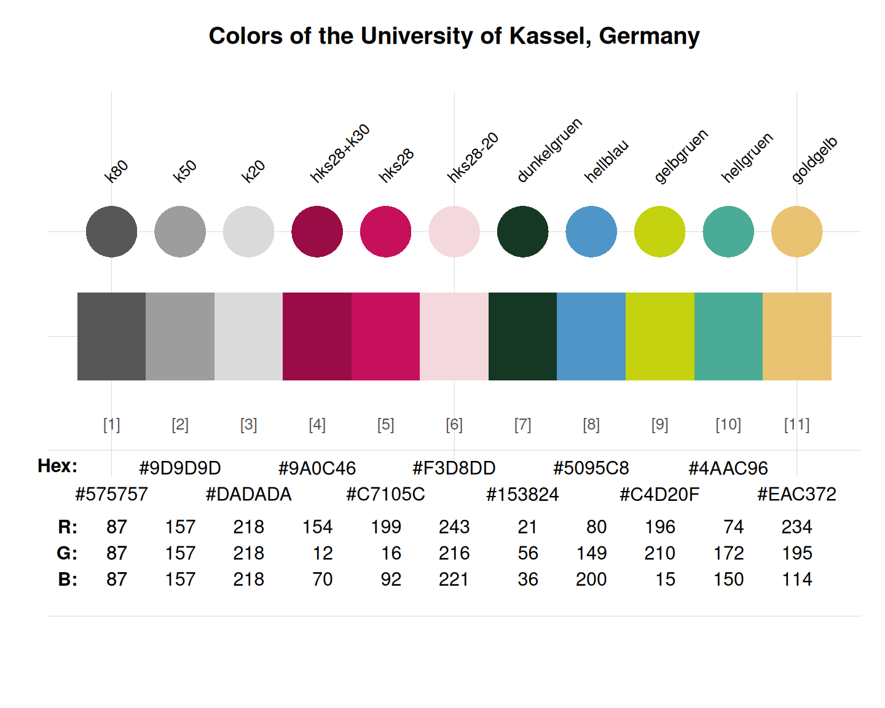

uni_kassel provides the 11 primary colors
of the University of Kassel, Germany.
Source
Color definitions are based on the Uni Kassel's website.
Details
The 11 primary colors are
"k80" (defined as HEX #575757),
"k50" (defined as HEX #9D9D9D),
"k20" (defined as HEX #DADADA),
"hks28+k30" (defined as HEX #9A0C46),
"hks28" (defined as HEX #C7105C),
"hks28-20" (defined as HEX #F3D8DD),
"dark_green" (defined as HEX #153824),
"light_blue" (defined as HEX #5095C8),
"yellow_green" (defined as HEX #C4D20F),
"light_green" (defined as HEX #4AAC96), and
"dark_gold" (defined as HEX #EAC372).
uni_kassel uses the HEX color definitions.
Examples
uni_kassel
#> k80 k50 k20 hks28+k30 hks28 hks28-20
#> "#575757" "#9D9D9D" "#DADADA" "#9A0C46" "#C7105C" "#F3D8DD"
#> dark_green light_blue yellow_green light_green dark_gold
#> "#153824" "#5095C8" "#C4D20F" "#4AAC96" "#EAC372"
unikn::seecol(uni_kassel, main = "University of Kassel") # view color palette.
